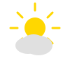

Welcome to Mexico City
Mexico City, or Ciudad de México, is one of the largest and most vibrant cities in the world. Built on the ruins of the ancient Aztec capital Tenochtitlan, this sprawling metropolis is a perfect blend of rich history, stunning architecture, world-class museums, and incredible cuisine. From the historic Zócalo to the colorful neighborhoods of Coyoacán and Roma, Mexico City offers endless cultural experiences.
Elevation
2,240 meters
Population
~22 million
Language
Spanish
Currency
Mexican Peso (MXN)
Weather

Temperature: 25°C
Conditions: Partly Cloudy
Wind: 10 km/h
Wind Chill: N/A
Must-See Attractions
- Zócalo - Historic main square and cultural center
- Chapultepec Castle - Beautiful hilltop palace and museum
- Frida Kahlo Museum - Casa Azul in Coyoacán
- Teotihuacan Pyramids - Ancient Mesoamerican city
- Xochimilco - Colorful floating gardens and trajineras
- Palacio de Bellas Artes - Stunning art nouveau theater